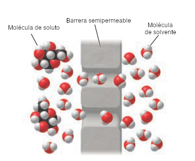

El cuerpo humano es casi 60% agua; la mayor parte de los procesos vitales son reacciones en fase acuosa que dependen de la ósmosis, palabra emparentada con el nombre del elemento osmio.
La ósmosis es un proceso de difusión en el que el solvente atraviesa una barrera que no permite el paso de las partículas de soluto, el paso del solvente modifica las concentraciones de las soluciones a los dos lados de la barrera.

A semejanza del calor que fluye de alta a baja temperatura para lograr equilibrio térmico, la presión osmótica equilibra las concentraciones de ambos lados de la membrana semipermeable.